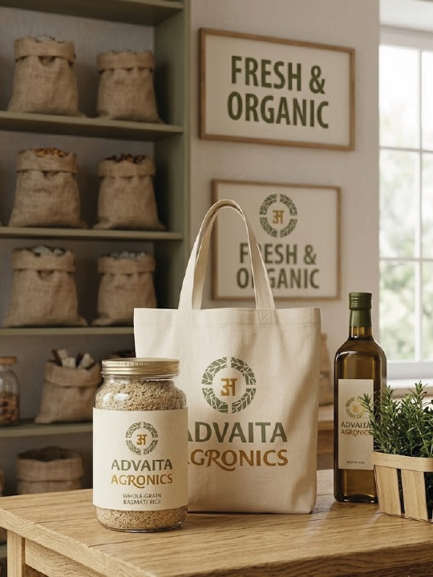
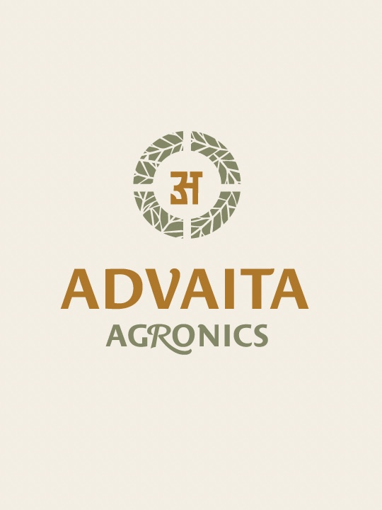
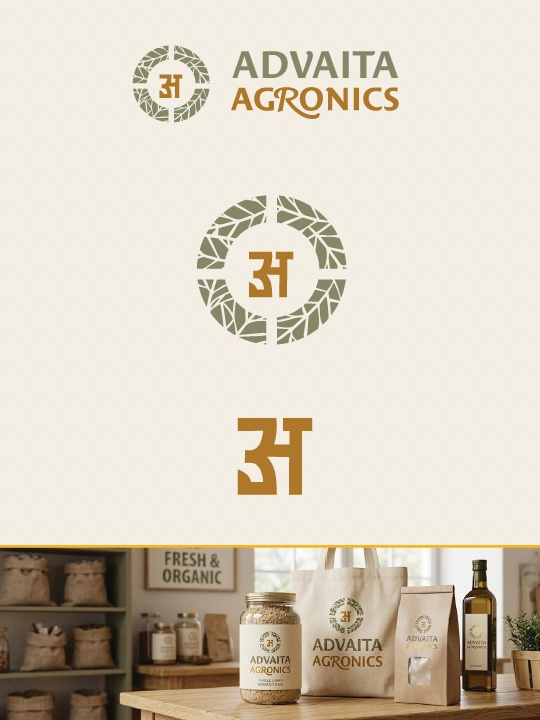
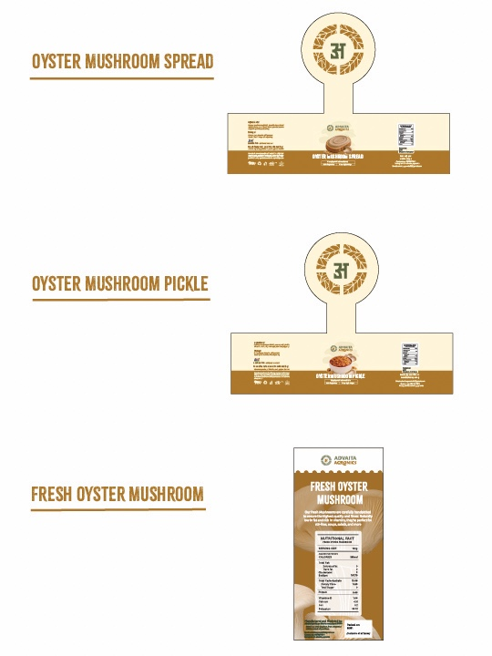
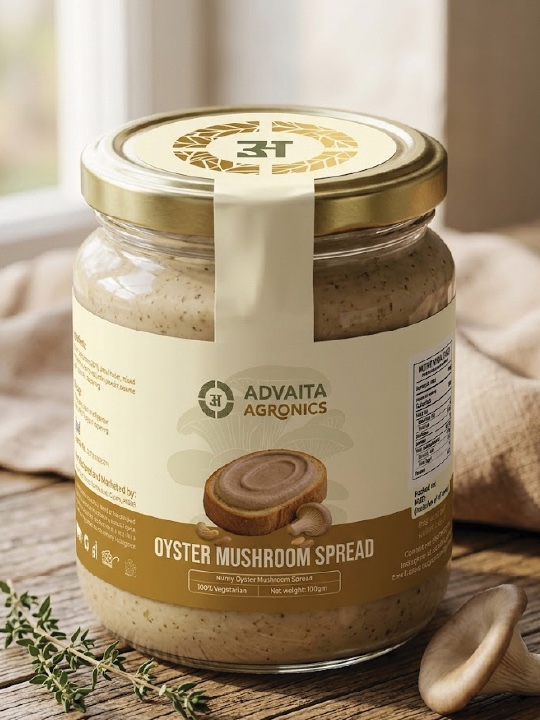
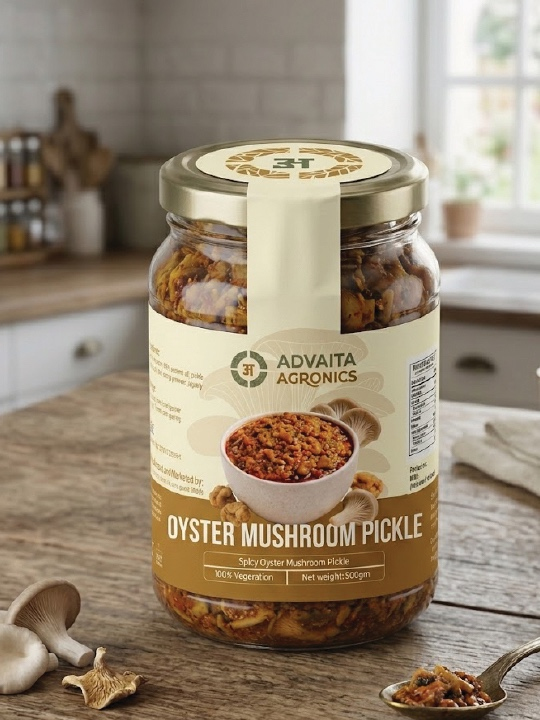

Smart agronomy solutions that empower farmers with cutting-edge technology, sustainable practices, and data-driven insights.
Advatika Agronics is a forward-thinking agriculture company dedicated to transforming traditional farming through technology. We combine deep agronomic expertise with precision technology to deliver solutions that are both practical and transformative.
From seed selection to harvest analytics, our end-to-end approach ensures every farm reaches its maximum potential — sustainably, profitably, and at scale.

Comprehensive agronomy services designed to transform every stage of your agricultural journey.
Deep soil profiling, nutrient mapping, and micro-climate analysis for precision input application.
IoT-driven irrigation systems that reduce water usage by up to 50% while maximizing crop health.
AI-powered yield prediction, disease detection, and crop performance dashboards.
Aerial surveillance with multispectral imaging to identify stress zones and optimize field operations.
Expert recommendations on high-yield, climate-resilient seed varieties suited to your soil type.
Carbon-neutral farming protocols, organic transition support, and eco-certification guidance.





Every metric represents a real farmer whose livelihood improved, a field that flourished, and a community that grew stronger.
Join Our NetworkFarmers Empowered
Acres Under Management
% Average Yield Increase
% Client Satisfaction
We start with a comprehensive on-site audit of your soil, water, and crop conditions.
Lab reports, satellite data, and sensor feeds are processed through our analytics engine.
A custom agronomy plan is crafted — tailored to your crops, budget, and goals.
Our field experts deploy technology and protocols with on-ground support throughout.
Continuous monitoring, seasonal reviews, and adaptive recommendations to maximize ROI.
"Advatika's soil analysis and crop advisory doubled my cotton yield in just one season. Their team is always available and deeply knowledgeable."
"The smart irrigation system they installed reduced our water costs by 40%. I've seen nothing like it. Truly the future of farming."
"Their drone monitoring caught a pest infestation before it could spread. We saved 200 acres of wheat. Advatika literally saved our season."